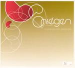

Home Artist links

Onsegen Ensemble - Hiukkavaara Session
| Artist: | Onsegen Ensemble |
| Title: | Hiukkavaara Session |
| Label: | self produced |
| Length(s): | 16 minutes |
| Year(s) of release: | 2005 |
| Month of review: | [04/2006] |
Line up
Esa Juujärvi - low frequences, cs-15
Kimmo Nissinen - high frequencies
Veijo Pukkinen - pulse
with
Minna Karjalainen - clarinet on 1
Jukka Limingoja - vocals on 2
Alisa Saila - vocals on 1
Tracks
| 1) | Vaino | 6.36
|
| 2) | Kuuhanka | 8.22
|
Summary
Named after an experimental Russian composer and poet, this is nonetheless
a Finnish band, from the harbour city of Oulu. This is what seems to be their
first (mini) album.
The music
Vaino has a strong drive as it opens. The guitar sound is a bit King Crimson
like: angular, and stark, but the pace is higher and the music is
more fluent and lighter. The Finnish vocals are by Alisa Saila, who has
a slightly ethereal voice, singing a bit folky and accessible melody.
We do have plenty of low frequencies, as if somebody plass bass like on a guitar.
The music really rocks,
in a way that I wish King Crimson would these days. Maybe the band plays in a
slightly heavier and more psyche like vein, something I certainly did not
expect with the packaging of this album. I was expecting something very
stately and neo-classical. Towards the end, the band becomes more and more chaotic
and psychedelic. The vocals do come back.
Kuuhanka is like its predecessor a rather heavy piece of work, more in the vein
of a progrock powertrio, playing repetitive riffs that build a decent amount of
tension. The band can also loosen the reigns somewhat and let things develop.
The slowly the drums picks up the pace and the band follows obediently. The vocals
are very different this time, very low in an operatic kind of way. Again, the
vocals have a folky ring to them.
Conclusion
Not a long item, but a promising one, mainly in the vein of King Crimson with
plenty of angular guitar work (and rhythm guitar work too, which makes the band
sound heavier and more psychedelic).
© Jurriaan Hage